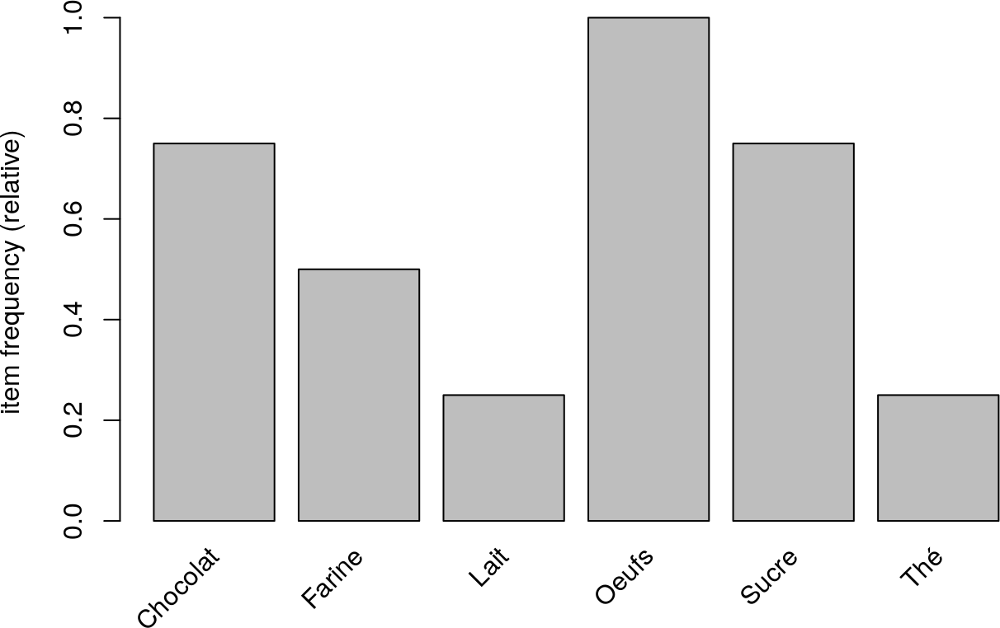
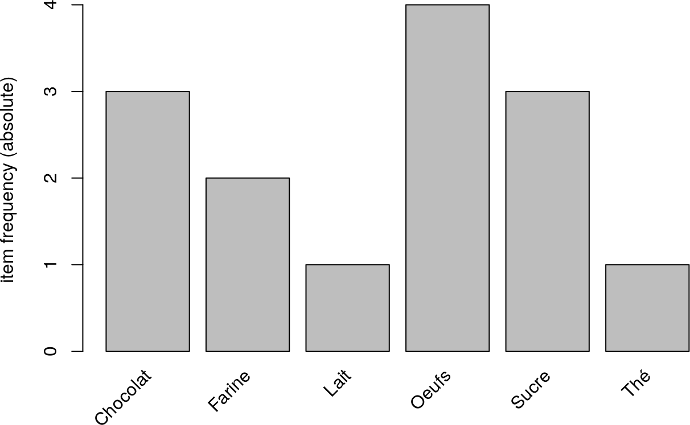
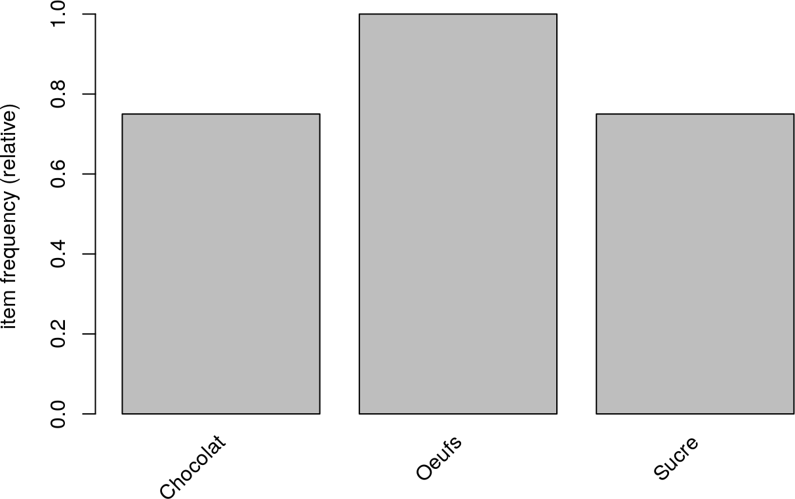
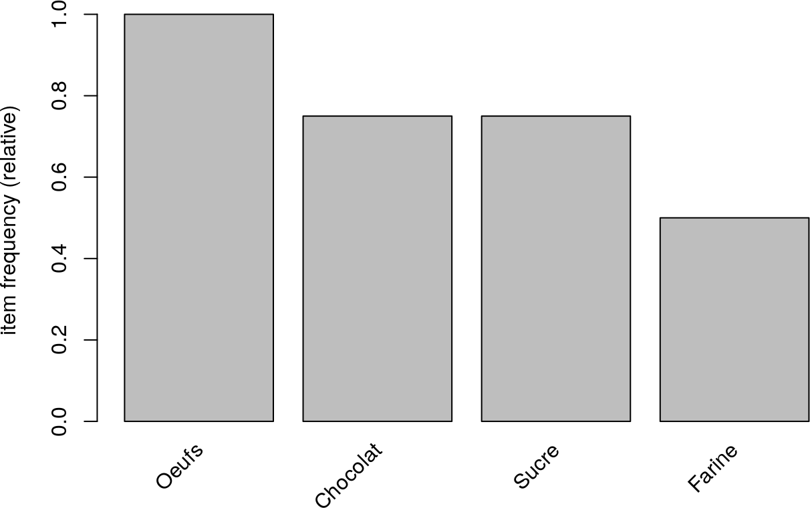
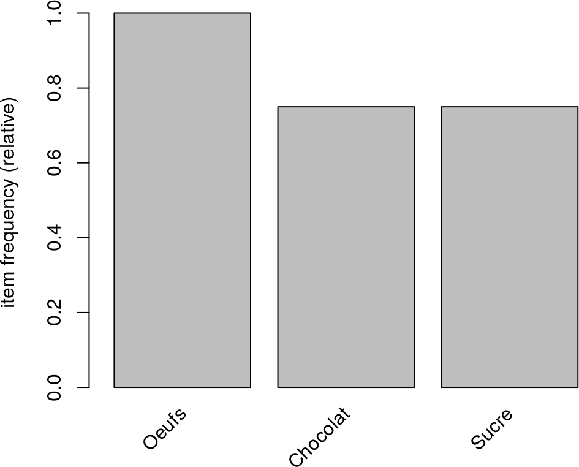

9 Règles d’association
Dans ce chapitre, on considère :
- un ensemble d’items \(\mathcal{I}\) ;
- un ensemble de transactions \(\mathcal{T}\) de parties de \(\mathcal{I}\).
Exemple 9.1 On souhaite étudier les associations entre les produits achétés dans un magasin d’alimentation à partir de l’analyse des tickets de caisse.
L’ensemble des items est alors l’ensemble des produits possibles, par exemple \(\mathcal{I} = \{\text{Farine}, \text{Sucre}, \text{Lait}, \text{Oeufs}, \text{Chocolat}, \text{Thé}\}\).
L’ensemble des transactions est alors l’ensemble des tickets de caisse, par exemple \(\mathcal{T} = \begin{aligned}[t] \{ &\{\text{Farine}, \text{Sucre}, \text{Lait}, \text{Oeufs}\}, \{\text{Farine}, \text{Sucre}, \text{Oeufs}, \text{Chocolat}\}, \\ &\{\text{Sucre}, \text{Oeufs}, \text{Chocolat}\}, \{\text{Oeufs}, \text{Chocolat}, \text{Thé}\} \}. \end{aligned}\)En R : Installer, charger et utiliser la bibliothèque
arulesCette bibliothèque sera utilisée dans tout le chapitre. Cette bibiliothèque n’étant pas installée par défault, il faut donc l’installer :
Remarque. Vous devez redémarrer RStudio pour que les pages d’aide soient disponibles.Elle doit être chargée avant toute utilisaton :
En R : Acquérir des transactions
On utilise la fonction
read.transactions:
formatspécifie le format du fichier :
format = "basket"indique que chaque ligne du fichier contient la liste des items d’une transaction ;format = "single"indique que chaque ligne du fichier contient un item et l’identifiant de la transaction qui le contient ;headerspécifie si la première ligne du fichier contient la description des variables (aussi appêlé en-tête) ;sepspécifie le séparateur utilisé entre deux valeurs ;rm.duplicatesspécifie le comportement en cas de doublons dans une transaction :
rm.duplicates = FALSEindique que l’on laisse les doublons (cas par défaut) ;rm.duplicates = TRUEindique que l’on supprime les doublons ;skipspécifie le nombre de lignes à ne pas considérer avant de démarrer l’acquisition (0par défaut).transactions <- read.transactions("supermarket.csv", format = "basket", header = FALSE, sep = ";") ; transactions transactions in sparse format with 4 transactions (rows) and 6 items (columns)La fonction
inspectpermet de décrire les transactions :
9.1 Outils d’analyse
Exemple 9.2 En reprenant l’exemple précédent, on a :
- \(f_{\{\text{Farine}\}} = 1/2\) ;
- \(f_{\{\text{Sucre} \}} = 3/4\).
En R : Calculer la fréquence de chaque item
On utilise la fonction
itemFrequency:
typespécifie le calcul effectué ;
type = "relative"indique que l’on calcule les fréquences (cas par défaut) ;type = "absolute"indique que l’on calcule les fréquences.itemFrequency(transactions) Chocolat Farine Lait Oeufs Sucre Thé 0.75 0.50 0.25 1.00 0.75 0.25 itemFrequency(transactions, type = "relative") Chocolat Farine Lait Oeufs Sucre Thé 0.75 0.50 0.25 1.00 0.75 0.25 itemFrequency(transactions, type = "absolute") Chocolat Farine Lait Oeufs Sucre Thé 3 2 1 4 3 1
En R : Représenter graphiquement la fréquence de chaque item
On utilise la fonction
itemFrequencyPlot
typespécifie le calcul effectué ;
type = "relative"indique que l’on calcule les fréquences (cas par défaut) ;type = "absolute"indique que l’on calcule le nombre d’occurrences ;supportspécifie la valeur minimale de la fréquence (ou du nombre d’occurrences) pour laquelle on affiche les items ;topNspécifie le nombre d’items de plus grande fréquence (ou plus grand nombre d’occurrences) à afficherhorizspécifie si les barres sont tracées horizontalement (ce qui n’est pas le cas par défaut)




9.1.1 Support
9.1.2 Confiance
La confiance de \(X \to Y\) traduit donc la probabilité d’avoir \(Y\) dans une transaction, sachant qu’elle contient déjà \(X\).
Exemple 9.4 En reprenant l’exemple précédent, on a :
- \(\operatorname{conf}(\text{Farine} \to \text{Sucre} ) = 1\) ;
- \(\operatorname{conf}(\text{Sucre} \to \text{Farine}) = 2/3\).
9.1.3 Amélioration (ou lift)
Remarque. Le lift de \(X \to Y\) est donc le rapport entre :
- la confiance de \(X \to Y\), i.e. le pourcentage de transactions contenant \(Y\) parmi celles contenant \(X\) ;
- la fréquence de \(Y\), i.e. le pourcentage de transactions contenant \(Y\).
Proposition 9.3
- \(\operatorname{lift}(X \to Y) = \dfrac{f_{X \cup Y}}{f_X \cdot f_Y}\)
- \(\operatorname{lift}(X \to Y) = \operatorname{lift}(Y \to X)\)
9.2 Algorithme de construction de règles
Définition 9.6 Soit \(s_{\text{min}}\) et \(c_{\text{min}}\) deux réels de \([0,1]\).
On définit :
- pour tout entier \(k\) entre \(1\) et \(\operatorname{card}(\mathcal{I})\), l’ensemble des sous-ensembles d’items fréquents de cardinal \(k\) \(F_k = \{X \subset \mathcal{T},\: \operatorname{card} X = k \text{ et } \operatorname{supp}(X) \geq s_{\text{min}}\}\) ;
- l’ensemble des sous-ensembles d’items fréquents \(F = \displaystyle\bigcup_{k = 1}^{\operatorname{card}(\mathcal{I})} F_k\).
L’algorithme Apriori (Agrawal et Srikant 1994) est défini comme suit :
- Calculer \(F_k\) pour tout entier \(k\) entre \(1\) et \(\operatorname{card}(\mathcal{I})\) et en déduire \(F\).
- Calculer \(\mathcal{R} = \{X \to Y,\: (X, Y) \in F^2 \text{ et } \operatorname{conf}(X \to Y) \geq c_{\text{min}}\}\).
Remarque.
- \(F_k\) est l’ensemble des sous-ensembles de \(k\) items dont le support est au moins égal à \(s_{\text{min}}\).
- \(\mathcal{R}\) est l’ensemble des règles dont :
- la prémisse et la conséquence sont dans \(F\) ;
- la confiance est au moins égale à \(c_{\text{min}}\).
En R : Appliquer l’algorithme Apriori
On utilise la fonction
aprioridont le second paramètreparameterspécifie la liste des paramètres nommés :
supportindique la valeur minimale du support \(s_{\text{min}}\) (0.1par défaut) ;confidenceindique la valeur minimale de la confiance \(c_{\text{min}}\) (0.8par défaut) ;minlenindique la valeur minimale du nombre d’items par sous-ensemble fréquent (1par défaut) ;maxlenindique la valeur maximale du nombre d’items par sous-ensemble fréquent (10par défaut).rules <- apriori(transactions, parameter = list(support = 0.5, confidence = 0.8)) Apriori Parameter specification: confidence minval smax arem aval originalSupport maxtime support minlen 0.8 0.1 1 none FALSE TRUE 5 0.5 1 maxlen target ext 10 rules TRUE Algorithmic control: filter tree heap memopt load sort verbose 0.1 TRUE TRUE FALSE TRUE 2 TRUE Absolute minimum support count: 2 set item appearances ...[0 item(s)] done [0.00s]. set transactions ...[6 item(s), 4 transaction(s)] done [0.00s]. sorting and recoding items ... [4 item(s)] done [0.00s]. creating transaction tree ... done [0.00s]. checking subsets of size 1 2 3 done [0.00s]. writing ... [8 rule(s)] done [0.00s]. creating S4 object ... done [0.00s].On utilise la fonction
subsetpour ne garder que les règles dont le lift est strictement supérieur à un :On utilise la fonction
inspectpour afficher les règles :